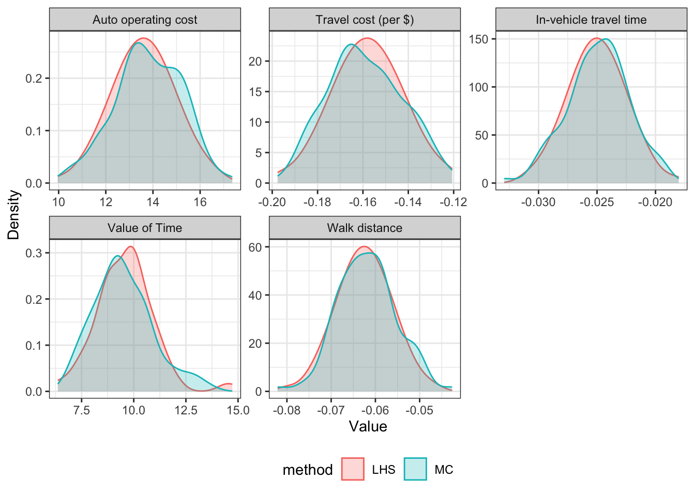
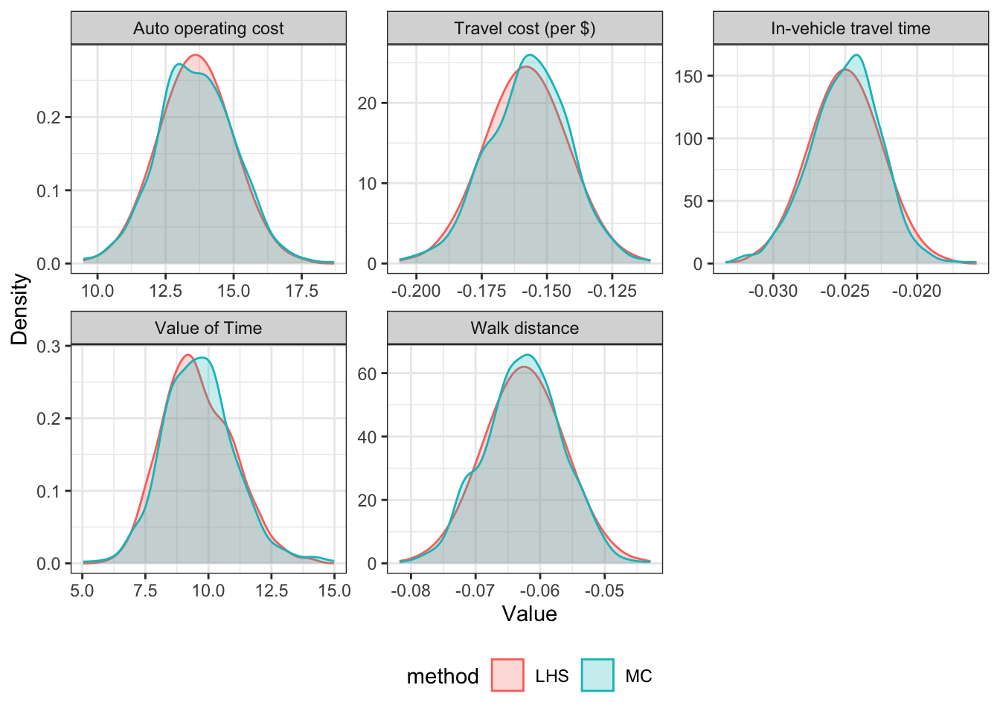
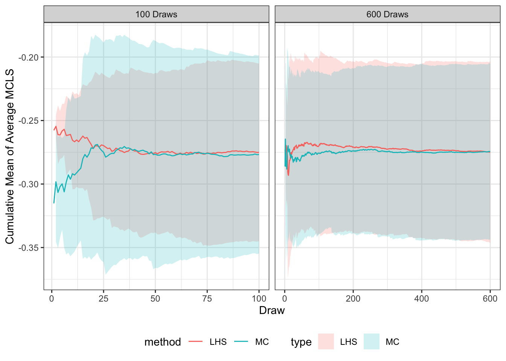
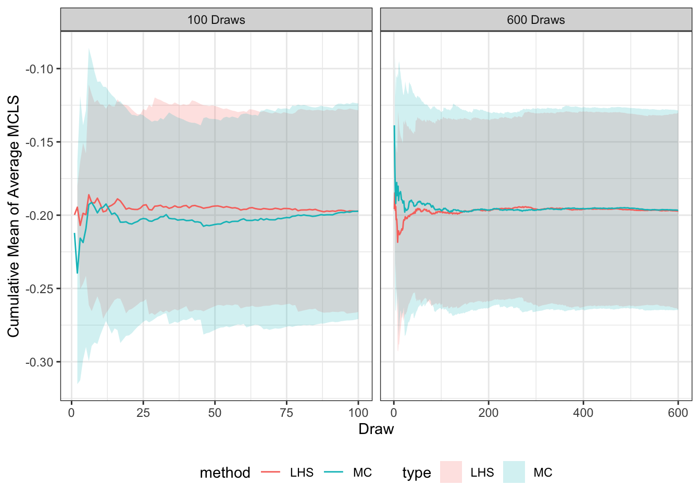

| Variable | HBW | HBO | NHB | |
|---|---|---|---|---|
| Mode Choice Coefficients | ||||
| In-vehicle travel time | $\beta_{ivtt}$ | -0.0250 | -0.0150 | -0.0200 |
| Travel cost | $\beta_{tc}$ | -0.0016 | -0.0024 | -0.0025 |
| Walk distance | $\beta_{wd}$ | -0.0625 | -0.0375 | -0.0500 |
| Auto operating cost (cents/mile) | $\beta_{ac}$ | 13.6000 | 13.6000 | 13.6000 |
| Mode Choice Constants | ||||
| Transit constant | $k_{trn}$ | -0.3903 | -1.9811 | -2.2714 |
| NonMotorized constant | $k_{nmot}$ | -1.2258 | -0.3834 | -0.8655 |
| Destination Choice Parameters | ||||
| Households | $\gamma_{hh}$ | 0.0000 | 1.1657 | 0.5664 |
| Other + Office | $\gamma_{oth + off}$ | 0.0000 | 0.8064 | 0.5626 |
| Office | $\gamma_{off}$ | 0.4586 | 0.0000 | 0.0000 |
| Other | $\gamma_{oth}$ | 1.6827 | 0.0000 | 0.0000 |
| Retail | $\gamma_{ret}$ | 0.6087 | 2.2551 | 5.1190 |
3 Model Design and Methodology
3.1 Model Design
To examine the effects of parameter input sensitivity, we adapted a trip-based travel demand model from the Roanoke Valley Transportation Planning Organization (RVTPO). The RVTPO model provides an ideal testing environment for this research because it uses an integrated mode and destination choice framework common in more advanced trip-based models. At the same time, its small size (approximately 215 zones) means the entire model runs in a few minutes and thus allows for efficient testing of multiple model runs.
The total passenger trips \(T\) traveling from zone \(i\) to zone \(j\) on the highway in a period \(t\) is \[ T_{ijt} = P_i * \mathcal{P}_{\mathrm{auto}}(\beta, C_{ijt}) * \mathcal{P}_j(\gamma, A_j, MCLS_{ijt}) * \Delta_t \tag{3.1}\] where \(P\) is the productions at zone \(i\); \(\mathcal{P}_{\mathrm{car}}\) is the car mode choice probability determined by utility parameters \(\beta\) and the travel costs \(C\) between \(i\) and \(j\) at time period \(t\); \(\mathcal{P}_{j}\) is the destination choice probability of choosing destination \(j\) given the utility parameters \(\gamma\), attractions \(A\), and the impedance as the mode choice model logsum \(MCLS_{ijt}\). A time-of-day and direction factor \(\Delta\) finalizes the total assigned trips.
The productions \(P_i\), and attractions \(A_j\) were extracted from the RVTPO Model and held constant. The attractions are determined from the socioeconomic (SE) data. The SE data included information by TAZ for the total population, number of households, total workers, and workers by employment type. The trip productions are organized by TAZ and trip purpose. The trip purposes used in this model are Home Based Work (HBW), Home Based Other (HBO), Non-Home Based (NHB), Commercial Vehicles (CV), Internal-External (IXXI), and External-External (XX). Only the first three are analysed, but all of the purposes are assigned to the network. CV, IXXI, and XX trips were kept fixed for this analysis.
The two parameter vectors \(\beta\) and \(\gamma\) describe the mode choice model and destination choice model coefficients, respectively. Mode choice estimates how many trips from \(i\) to \(j\) will happen on each available mode \(k\).This model analyses three modes of transportation: auto, non-motorized, and transit. The mode by which a trip is made is determined by calculated utilities for the three modes. These utilities take inputs from parameter values and time and distance skims \(X\). Skims are either the time or distance to travel between zone pairs. Travel time for auto used the single occupancy vehicle peak time, non-motorized travel time used the distance skim multiplied by a factor of average walking speed (3 mph), and transit time used the walk to bus peak time. The mode choice parameters (constants and coefficients) were also obtained from the RVTPO model. These values are shown in Table 3.1.
The utility equations for the mode choice model are as follows: \[ \begin{aligned} U_{auto} &= \beta_{ivtt} * X_{auto} + \beta_{tc} * \beta_{ac} * X_{dist}\\ U_{nmot} &= k_{nmot} + 20 * \beta_{wd}*X_{nmot}\\ U_{trn} &= k_{trn} + \beta_{ivtt} * X_{trn} \end{aligned} \] These utilities are used to calculate the MCLS by: \[ MCLS_{ij} = \ln\left(\sum_{k \in K} e^{U_{ijk}}\right). \tag{3.2}\] If the distance was greater than 2 miles, non-motorized travel was excluded.
This logsum value is then used as the primary impedance for a destination choice model (Ben-Akiva & Lerman, 1985). Destination choice estimates travel patterns based on mode choice, trip generators (workers and households), and destination choice parameters. These parameter values are also shown in Table 3.1. The destination choice utility is the primary impedance (mode choice logsum value) plus the natural log of the size term, where the sized term is calculated as: \[ A_j = \gamma_{hh} * \mathrm{HH} + \gamma_{off} * \mathrm{OFF} + \gamma_{ret} * \mathrm{RET} + \gamma_{oth} * \mathrm{OTH} + \\ \gamma_{oth+off} * \mathrm{OFFOTH} \tag{3.3}\] HH is the total households in zone \(j\). OFF, RET, and OTH are the jobs in zone \(j\) by employment type office, retail, and other respectively. The destination choice utility is then transformed into a destination choice logsum value with: \[ DCLS = \ln \left(\sum_{j \in J} e^{\ln(A_j) + 1* MCLS_{ij}}\right) \tag{3.4}\]
The probability of both the mode choice and destination choice are calculated using the exponentiated utility divided by the corresponding logsum. These probabilities in conjunction with the trip productions can calculate the number of production-attraction (PA) trips between each zone by each mode and purpose. The auto trips are calculated by multiplying the probability of the destination by PA pair, the productions for each origin, and the probability of an auto mode choice by PA pair. This results in PA auto trips. The same process is followed for the other two modes. These PA trips are converted into origin destination (OD) trips by multiplying the trips by corresponding time of day factors (see #eq-trips). These trips are calculated using Bentley’s CUBE and the RVTPO model. The trips, by time period, are assigned to the highway network by the shortest path by time using free flow speed and with link capacity as a restriction.
3.2 Uncertainty Design
Within the mode and destination models there exists uncertainty within the parameters in Table 3.1. Sampling methods can take the defined uncertainty and choose potential parameter values within the possible range. Two common methods for parameter sampling include, Monte Carlo (MC) simulation and Latin hypercube sampling (LHS). MC simulation draws independently from multiple distributions, while LHS makes draws that cover the parameter space more efficiently and can capture the joint distribution between two or more parameter values (Helton & Davis, 2003). As a result, LHS can reduce the number of draws needed to fully re-create the statistical variance in a model, but the amount of reduction is unknown and may not be universal to all problems (Yang et al., 2013).
With the trip-based model described above, MC and LHS methods were used to develop alternative parameter sets to evaluate uncertainty. To identify a standard deviation for each parameter, a coefficient of variation was used. A set coefficient of variation of 0.10 was used for the four mode choice coefficients and the destination choice parameters. The mode choice constants were kept the same across all iterations. Literature had identified a coefficient of variation of 0.30, but for this analysis that caused an unrealistic value of time, and thus it was changed to be 0.10 (Zhao & Kockelman, 2002). Value of time is a ratio in units of money per time that should be compared to the regional wage rate. Using a \(c_v\) of 0.30 the value of time range was from \(\$2\) to \(\$32\) /hr, whereas using a \(c_v\) of 0.10 the range was \(\$6\) to \(\$14\) /hr. The latter seemed more rational because it is related to wage rates and thus a \(c_v\) of 0.10 was used for our analysis. The standard deviation was equal to 0.10 multiplied by the mean, where the mean values in this situation are the base scenario parameters (as identified in Table 3.1 ).
The MC random sampling uses the R function of rnorm. LHS uses the lhs package in R. Since this package only chooses variables on a zero to one scale, the values given use a function to put the random sampling on the right scale needed for the given parameter. The full code for both methods can be found in a public GitHub repository. One hundred and 600 draws of random samples for both methods are generated. With these generated parameters, the mode choice model step was run for every set of input parameters for each purpose. The average MCLS value for each run was determined to compare each continuous draw. This allowed us to see how many iterations of which sampling type would be sufficient to show a full range of possible outcomes.
The parameters generated were compared for both sampling methods. Figure 3.1 shows the distributions for the HBW parameters when using 100 and 600 draws. These distributions show that LHS gives normally distributed parameters with fewer draws than MC sampling: at 100 draws LHS shows a nearly perfect normal distribution, where there are some discrepancies for the MC generated parameters. These Figures show that LHS is likely to estimate the full variance of the results with fewer draws.


To determine if LHS is effective at a reasonable amount of iterations, the cumulative mean and the cumulative standard deviation of the average MCLS value for every zone (see Equation 3.2 ) was calculated for each additional draw for both sampling methods. MCLS is an impedance term which is an important value for destination choice and region routing. The average MCLS, \(x\), was used as a measure of outcome possibilities to simplify a complex term as a single value to compare by across all iterations. The cumulative mean is calculated as: \[ \mu_i = \frac{x_1 + ... + x_i}{n} \tag{3.5}\] and the cumulative standard deviation is calculated as: \[ SD_i = \sqrt{\frac{\sum (x_i - \mu_i)^2 }{n-1}}. \tag{3.6}\] The cumulative mean shows how the average MCLS stabilizes across each iteration, and the cumulative standard deviation is used to show the 95% confidence interval of that mean. When the cumulative mean for the draws stabilizes, that shows that the amount of generated parameters has captured the possible variance of the results. This is shown for two of the three trip purposes in Figure 3.2.
## HBW
tar_load(hbw_stats_100)
tar_load(hbw_stats_600)
hbw_stats <- bind_rows(hbw_stats_100, hbw_stats_600, .id = "ndraws") %>%
mutate(ndraws = case_when(ndraws == "1" ~ "100 Draws",
ndraws == "2" ~ "600 Draws"))
hbw_cm <- hbw_stats %>%
filter(type != "base") %>%
ggplot() +
aes(x = draw, y = cummean, ymin = cummean - 1.96*cumvar, ymax = cummean + 1.96*cumvar, colour = type, fill = type, group = type) +
geom_ribbon(alpha = 0.2, colour = NA) +
geom_line(size = 0.5) +
# ylim(0.025, 0.15) +
labs(x = "Draw",
y = "Cumulative Mean of Average MCLS",
color = "method") +
scale_color_hue(direction = 1) +
theme_bw() +
theme(legend.position = "bottom") +
facet_wrap(vars(ndraws), scales = "free_x")Warning: Using `size` aesthetic for lines was deprecated in ggplot2 3.4.0.
ℹ Please use `linewidth` instead.## HBO
tar_load(hbo_stats_100)
tar_load(hbo_stats_600)
hbo_stats <- bind_rows(hbo_stats_100, hbo_stats_600, .id = "ndraws") %>%
mutate(ndraws = case_when(ndraws == "1" ~ "100 Draws",
ndraws == "2" ~ "600 Draws"))
hbo_cm <- hbo_stats %>%
filter(type != "base") %>%
ggplot() +
aes(x = draw, y = cummean, ymin = cummean - 1.96*cumvar, ymax = cummean + 1.96*cumvar, colour = type, fill = type, group = type) +
geom_ribbon(alpha = 0.2, colour = NA) +
geom_line(size = 0.5) +
# ylim(0.025, 0.15) +
labs(x = "Draw",
y = "Cumulative Mean of Average MCLS",
color = "method") +
scale_color_hue(direction = 1) +
theme_bw() +
theme(legend.position = "bottom") +
facet_wrap(vars(ndraws), scales = "free_x")
## NHB
tar_load(nhb_stats_100)
tar_load(nhb_stats_600)
nhb_stats <- bind_rows(nhb_stats_100, nhb_stats_600, .id = "ndraws") %>%
mutate(ndraws = case_when(ndraws == "1" ~ "100 Draws",
ndraws == "2" ~ "600 Draws"))
nhb_cm <- nhb_stats %>%
filter(type != "base") %>%
ggplot() +
aes(x = draw, y = cummean, ymin = cummean - 1.96*cumvar, ymax = cummean + 1.96*cumvar, colour = type, fill = type, group = type) +
geom_ribbon(alpha = 0.2, colour = NA) +
geom_line(size = 0.5) +
# ylim(0.025, 0.15) +
labs(x = "Draw",
y = "Cumulative Mean of Average MCLS",
color = "method") +
scale_color_hue(direction = 1) +
theme_bw() +
theme(legend.position = "bottom") +
facet_wrap(vars(ndraws), scales = "free_x")
## Plot
hbw_cm
hbo_cm

For all three trip purposes, both sampling methods had a stabilized mean by 100 draws. The LHS methods standard deviation ribbon was generally thinner than the MC method. From the narrowed cumulative standard deviation, and that the parameter values are better normally distributed when using LHS, that method of sampling was used for the assignment analysis of the model. Since LHS captures the possible variance at a small enough number of iterations, it can be used for large transportation demand models. From these results it was decided to use 100 LHS samples parameters to evaluate uncertainty within each step of the model. The next chapter includes the results of applying these sampled parameters to the travel demand model.